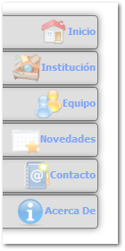

Menú Lateral Público

El presente menú muestra las opciones disponibles para los usuarios que no se encuentren registrados, los cuales pueden navegar por las secciones públicas de la aplicación, las cuales brindan información sobre la institución, sus docentes, actividades y formas de contacto.
|